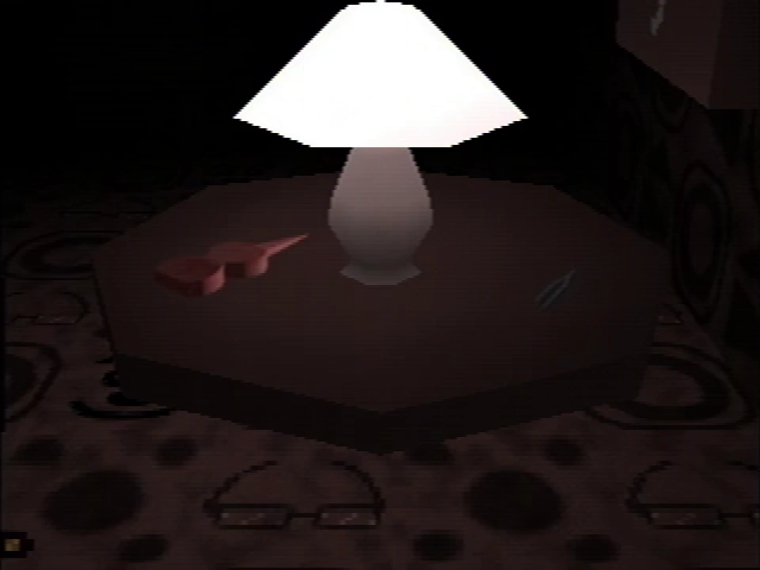
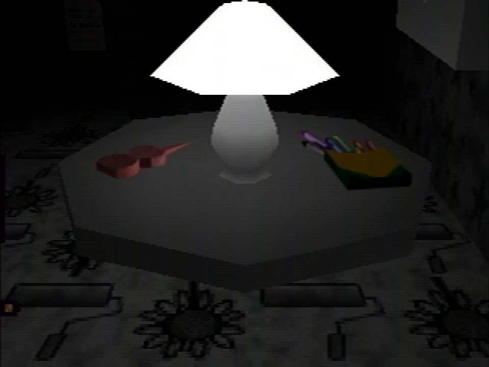

Petscop 3
Petscop 3 is the third video in the Petscop series, it was uploaded on April 2, 2017, only a day after Petscop 2.
Petscop 3 focuses on Paul's initial exploration of the Child Library.
A transcript for this episode can be accessed at Petscop 3/Transcript.
Synopsis
The video begins in in the area South of the grave room. Paul explains that he will be exploring the area to the right, and heads there through a doorway, reaching a hallway with "Good Grief And Alas" written on the wall.
Paul finds the Child Library and inspects it, finding a blocked passage and an easel which can be used to input a face. He enters one, and the room begins shaking. Confused, Paul exits the room and comes back, only to find that the easel has reset, and the room has stopped shaking. He enters another face, and begins waiting. The video cuts to a later point where the room has stopped shaking. Paul enters the passageway on the other side of the room, which is now open, finding a bedroom containing a table with several objects on it.
Paul enters several additional faces, waiting for the room to shake for about ten minutes every time. Each face allows him to access a new bedroom, but they are all extremely similar, only containing minor visual differences compared to the previous ones. Paul notes the lack of variation between rooms and speculates that they're "probably generated in some way."
Paul returns to the grave room, noting that faces found here may be entered into the Child Library easel.
{kind=link}

{kind=link}
The table in Mike's room
Upon entering Mike's face, a text box appears:
Mike is not inside right now. He is dead.
You may visit his room.
Mike's room is similar to the previous rooms. A small red tool can be found on the table, along with what appears to be a pair of tweezers, or a tuning fork. Unlike the previous rooms, there is no child sitting on the bed.
{kind=link}

{kind=link}
The table in Care's room
Paul then enters the second face from the grave room, causing another text box to appear:
Care is missing.
You may visit her room.
The table in Care's room contains another small red tool, and a box of crayons. Like Mike's room, the bed is empty. Unlike any of the previous rooms, a note can be found on the wall. Upon interacting with it, the following text box appears:
Your wife says, "Care isn't growing eyebrows."
You say, "That's a puzzle."
You're secretly very excited to hear this news.
You're in the bathtub thinking about her.
I have a guess at which child you'll pick next.
When you find her room, the passage to my right will lead to her.
She'll appear from the darkness, limping, and I'll shoot her in the head.
Tiara says young people can be psychologically damaged "beyond rebirthing".
A young person walks into your school building.
They walk in with you. You're holding their hands.
They come out crying into their hands, because nobody will love them, not ever again.
"Nobody loves me!"
They wander the Newmaker Plane.
Paul speculates that this part of the game "was made for somebody to see," and that he isn't who was meant to see it.
After this, Paul exits the Child Library to explore the area to the East, only to find that the passage leads nowhere. The video then ends.
Notes
- Due to a YouTube bug, the video thumbnail displays an incorrect duration. Fans sometimes speculate that this was intentional, or that it implies additional footage was edited out, but these claims are unfounded.
| Petscop · Petscop 2 · Petscop 3 · Petscop 4 · Petscop 5 · Petscop 6 · Petscop 7 · Petscop 8 · Petscop 9 · Petscop 10 · Petscop 11 · Petscop 12 · Petscop 13 · Petscop 14 · Petscop 15 · Petscop 16 · Petscop 17 · Petscop 18 · Petscop 19 · Petscop 20 · Petscop 21 · Petscop 22 · Petscop 23 · Petscop 24 · Petscop Soundtrack | |
{kind=link}